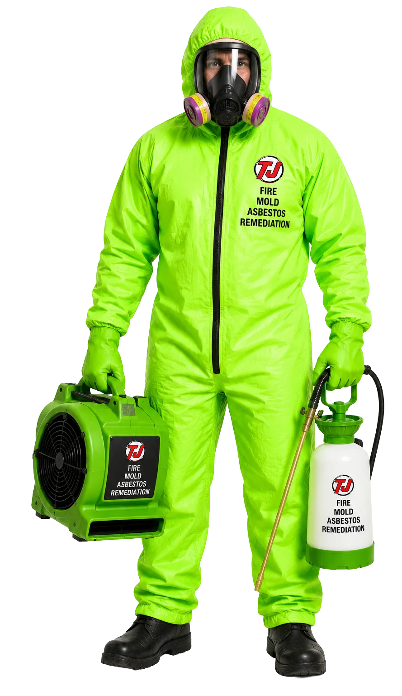

Contractor branding
built for the field.
Contractor branding should stay recognizable on a truck at road speed, a shirt at the door, a phone screen, an estimate, and a yard sign. Toughjobs builds the logo, color, type, messaging, and production files as one working system instead of a mark that only looks finished in a presentation.

From identity to in-hand.
We design, print, and fulfill — you just approve.
Identity
Logo, palette, fonts, and voice that fit your trade and town.
Apply
We extend it to wraps, cards, signs, apparel, and flyers.
We handle production and fulfillment — no vendor juggling.
Deploy
Your brand hits the road, the job site, and every mailbox.
Instant credibility on every street.
Look bigger than you are
Consistent branding makes a solo operator read as an established firm.
Rolling billboards
A wrapped truck advertises 40,000+ times a day for pennies per view.
Trust before the call
A pro look wins the bid before you ever quote a price.
DIY vs. agency vs. Toughjobs.
Cheap branding looks cheap.
| DIY | Typical Agency | Toughjobs | |
|---|---|---|---|
| Logo source | $5 Fiverr | $3,000–8,000 | Trade-fit, flat fee |
| Consistency across items | None | Varies | Full system |
| Print + fulfillment | You manage it | Extra cost | Handled for you |
| Vehicle wraps | Separate vendor | Outsourced | In-house design |
| Cost per impression | High | High | $0.002 (wraps) |
A mismatched logo on a magnet says 'small.' A wrapped truck and matching crew says 'call them.'
What belongs in a useful performance record.
Baseline
Record the starting assets, access, tracking, market, budget, and operating constraints before work begins.
Work log
Document what changed, when it changed, who approved it, and what still depends on the client or another vendor.
Verified outcome
Connect calls and forms to lead quality or booked work when the business can supply that information. Never substitute a stock quote for proof.
A contractor brand has to survive real use
Contractor branding is not a logo file by itself. The identity has to work in sunlight, dust, embroidery, vinyl, print, invoices, social profiles, and a mobile header. That requires a simple hierarchy, readable type, controlled colors, and versions that stay clear at different sizes.
We begin with the company name, services, audience, market, and the places the brand will appear. Concepts are judged against practical uses before production files are prepared. The finished system can move into vehicle wraps, crew apparel, and the print collateral program without each vendor rebuilding the identity.
What does a contractor brand package include?
- A primary logo plus simplified, horizontal, stacked, and one-color versions as needed.
- A defined color and type system with basic use guidance.
- Messaging direction for headlines, service descriptions, and calls to action.
- Organized source and export files for web, print, apparel, signs, and vehicles.
Bring the current logo, truck photos, and examples of where the brand fails. Then request a brand review built around the actual applications.
Contractor branding built for the field. FAQ
Do I need a new logo or a cleanup?
Some companies need a new identity; others need better versions, spacing, colors, type, and production files. The decision should follow the company’s recognition, legal ownership, current applications, and growth plans. Toughjobs reviews what can be kept before recommending a complete replacement.
Will the logo work on a truck and uniform?
Those applications are part of the test. A detailed mark may need a simplified version for embroidery or small vinyl, while a truck needs readable hierarchy at a distance. The system can include different approved lockups without changing the company’s identity from one use to the next.
What files will I receive?
The handoff should include the agreed source files and common exports for print, web, signs, apparel, and vendors. File types, color modes, fonts or font licensing, and any third-party assets are documented. The exact package is listed in the proposal before design begins.
Can you use my existing colors?
Yes, when they reproduce well and support the company’s goals. Existing colors can be refined into a defined palette with consistent values for screen and print. If visibility, contrast, or production creates a problem, Toughjobs explains the issue and presents an alternative instead of changing the brand without a reason.
Look like the pro you already are.
Book a free strategy call and we'll review your current branding and show you what a consistent, trade-ready identity could do for your bookings.